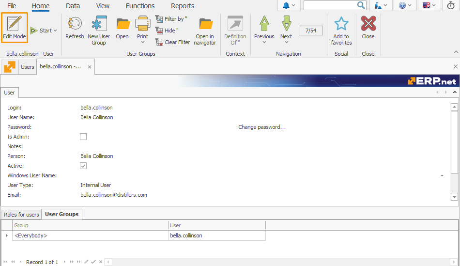
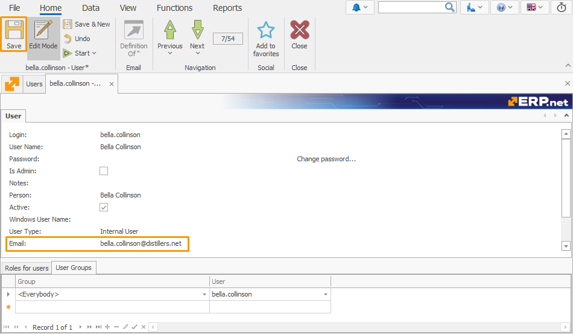
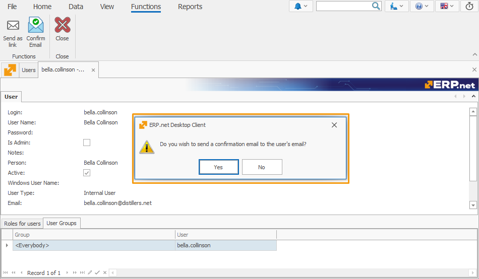
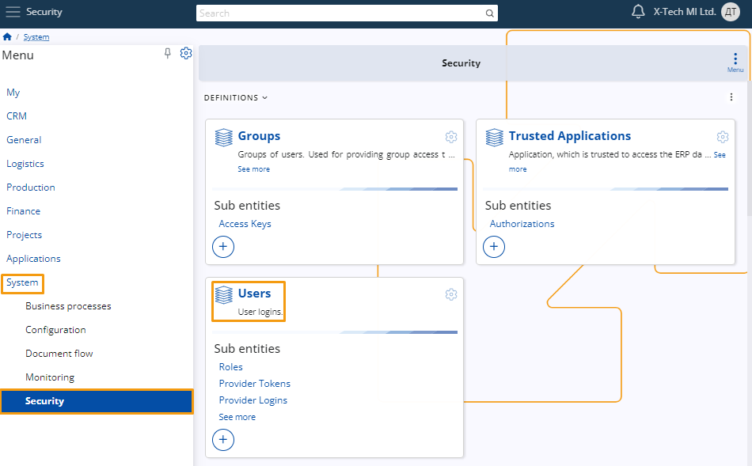
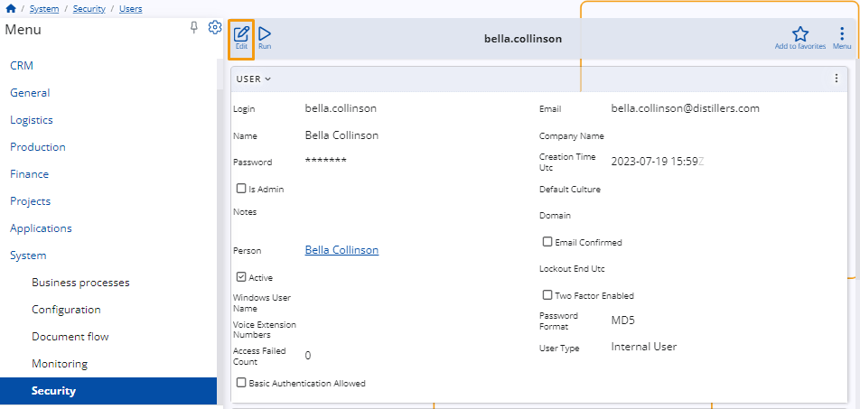
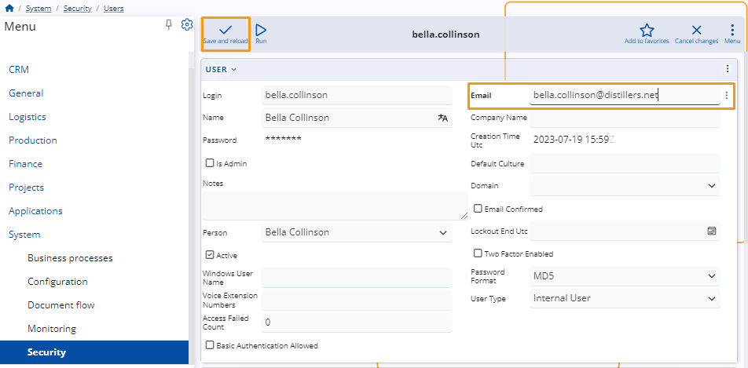
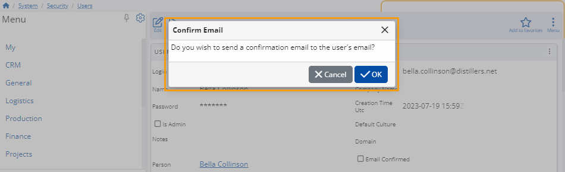

Confirm Email
The Confirm Email feature in ERP.net allows administrators to send email verification requests easily.
This feature enhances security and ensures that users' email addresses are verified correctly.
By following these steps, you can efficiently manage email confirmations for users within both the desktop and web clients.
Using the Desktop Client
- Log In
Log in to the system using your administrator credentials.
- Navigate to User Settings
Go to Setup > Security > Users and select the user you want to edit.

- Enter Edit Mode
Click on the user to open their details, then enter the edit mode by clicking the Edit button.

- Update Email
In the User panel, enter the email address in the Email field and save the changes.

- Access Confirm Email Function
Navigate to the Functions tab and click the Confirm Email button.

- Confirm Email Dialog
A dialog box will appear asking: Do you wish to send a confirmation email to the user's email? Click OK to send the verification email.

Using the Web Client
- Log In
Log in to the system using your administrator credentials.
- Navigate to User Settings
Go to System > Security > Users and select the user you want to edit.

- Enter Edit Mode
Click on the user to open their details, then enter the edit mode by clicking the Edit button.

- Update Email
In the User panel, enter the email address in the Email field and save the changes.

- Access Confirm Email Function
Click the Run button and select Confirm Email from the list.

- Confirm Email Dialog
A dialog box will appear asking: Do you wish to send a confirmation email to the user's email? Click OK to send the verification email.

Error Handling
- Email Field Empty
If the Email field is not filled, you will receive an error message:
- "Function cannot be started. The 'Email' field is not filled in."
- Email Already Confirmed
If the email is already confirmed, you will receive an error message:
- "Function cannot be started. Email {User.Email} has already been successfully confirmed."
Confirmation Email Content
When you confirm, the user will receive an email with the following content:
Hi [User Name],
We have received a request to update your email address. Please confirm this change by following this link below:
[Link]
Thank you for your cooperation. If you did not initiate this process, please contact the system administrator for assistance.
Note
Starting from version 25, upon successful completion of the email validation process, the user's "Email Confirmed" status will automatically be set to True in ERP.net.
Note
The screenshots taken for this article are from v24 of the platform.